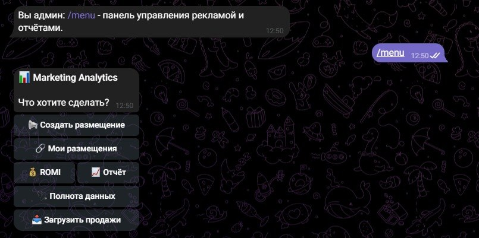
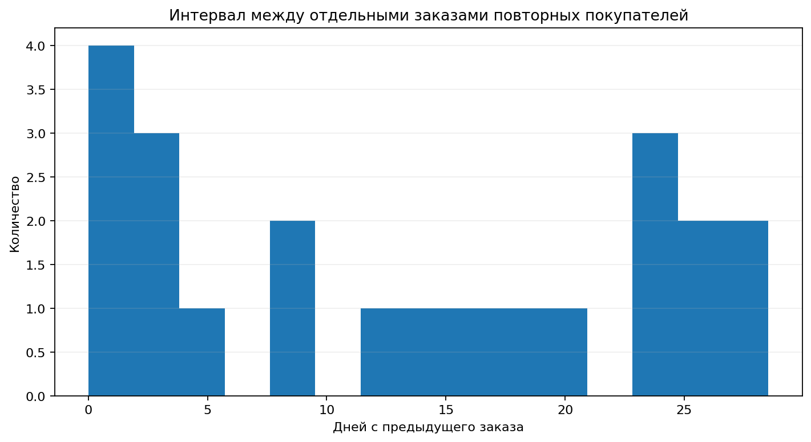

анализ эффективности маркетинга

context / задача
хакатон «Поступашек» · команда 5 человек · около 24 часов. MVP системы измерения эффективности маркетинга: от рекламного размещения и пользовательского касания до заявки, оплаты и ROMI.
data / данные
628 заказов, 606 покупателей и ≈5,9 млн ₽ выручки; рекламные размещения, пользовательские касания, заявки и Telegram-публикации.
process / работа
- Telegram-бот создаёт tracking-ссылки, фиксирует касания и заявки;
- система считает воронку, attributed revenue, CPA и ROMI по нескольким моделям атрибуции;
- аналитическая часть включает EDA 628 заказов, 606 покупателей и ≈5,9 млн ₽ выручки;
- Telegram-публикации классифицируются rule-based алгоритмом по типу контента;
- мой вклад: участие в проработке аналитической логики решения и подхода к анализу и классификации данных.
findings / результат
- Единица анализа имеет значение: 795 строк продуктов агрегированы в 628 заказов; 153 заказа содержат несколько курсов.
- Повторные покупки: отдельный повторный заказ совершили 20 из 606 покупателей — 3,30%. Несколько курсов в одном заказе не считаются повторной покупкой.
- Выручка: около 5,90 млн ₽; средний чек заказа — около 9,40 тыс. ₽, медианный — 8,95 тыс. ₽.
- Пробел измерения: в исторических данных нет связи «размещение → пользователь → покупка». Для новых кампаний MVP начинает собирать касания, заявки и оплаты.
Совпадение публикаций и продаж по времени не доказывает эффект рекламы. Исторический ROMI нельзя достоверно восстановить из этих данных. Четыре модели атрибуции сравниваются отдельно на синтетических данных с известным ground truth; это проверка модели измерения, а не доказательство реального рекламного эффекта.

Материалы команды: EDA и выводы ↗ · эксперимент атрибуции ↗